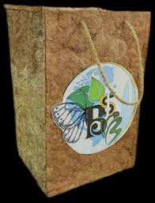
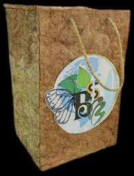

Replace Plastic with Banana Paper Bags
TRIQON promotes eco‑friendly banana fiber paper bags as a sustainable alternative to harmful plastic carry bags. Join the movement toward a greener planet.
Learn MoreInteractive Comparison
Slide to see the alternative
 

Current Choice: Plastic Bag